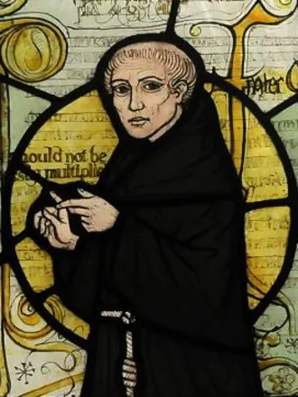

Who Was William of Ockham?
William of Ockham was an English Franciscan friar, logician, and scholastic philosopher who lived from approximately 1287 to 1347. He is remembered above all for the methodological principle known as Ockham's Razor, the idea that explanations should not multiply assumptions or entities beyond what is strictly necessary, a principle that would go on to shape scientific and philosophical reasoning for centuries after his own death.
Ockham is especially associated with nominalism, a position within the medieval debate over universals holding that general concepts such as "humanity" or "whiteness" do not correspond to any independently existing reality but are instead mental signs the mind constructs to group together genuinely individual, particular things, a position that placed him in direct opposition to more realist philosophers of his era.
Trained within the Franciscan order and educated at Oxford, Ockham developed an unusually rigorous and technically sophisticated body of logical and philosophical work before becoming entangled in a bitter political and theological conflict with the papacy over the doctrine of apostolic poverty, a controversy that eventually forced him into exile and transformed him into an influential political philosopher as well as a logician.
Because Ockham's philosophical output spans technical logic, epistemology, theology, and political theory, historians of philosophy continue to study different dimensions of his thought from many distinct angles. His importance nonetheless remains considerable, since his razor, his nominalism, and his defense of limited political authority each left a lasting and independently significant mark on the subsequent history of Western philosophy.
William of Ockham: Quick Facts
- Name — William of Ockham (Venerabilis Inceptor)
- Period — c. 1287–1347
- Born in — Ockham, Surrey, England
- Died in — Munich, Bavaria
- Associated with — Nominalism and the principle of Ockham's Razor
- Known for — Ockham's Razor, his theory of universals, and his conflict with Pope John XXII
- Major works — Summa Logicae, his Sentences Commentary, and A Dialogue
- Religious order — Franciscan friar
- Key controversy — The Franciscan poverty dispute with the papacy
- Historical importance — One of the most influential logicians and nominalist philosophers of the medieval period
Ockham and Late Medieval Scholasticism

Ockham's philosophical career unfolded during the mature and increasingly contested period of scholastic philosophy, a tradition of rigorous, dialectically structured argument developed within the medieval universities to reconcile Christian theology with the recently rediscovered philosophy of Aristotle, a synthesis most famously associated with Ockham's predecessor Thomas Aquinas.
By Ockham's own lifetime, this Aristotelian-Christian synthesis faced growing internal challenge from competing philosophical currents, including the increasingly sophisticated realist metaphysics of the earlier Franciscan philosopher Duns Scotus and a range of theological concerns about whether Aristotelian categories adequately preserved the absolute freedom and power traditionally attributed to God.
This period also saw significant institutional conflict within the Catholic Church itself, particularly surrounding the Franciscan order's distinctive commitment to absolute poverty, a controversy that would eventually draw Ockham directly into sustained political and theological conflict with the papacy, reshaping the remainder of his own intellectual career.
Ockham's Early Life and Franciscan Training
Relatively little is known with certainty about Ockham's childhood, though he is generally believed to have been born in the village of Ockham, Surrey, and to have entered the Franciscan order at a young age, receiving his early philosophical and theological training within the order's rigorous educational program before advancing to more specialized university study.
As a Franciscan friar, Ockham inherited a distinctive intellectual and spiritual tradition shaped significantly by the order's founder, Francis of Assisi, and by earlier Franciscan philosophers, including Duns Scotus, whose sophisticated philosophical and theological framework would become both an important influence on and a significant target of Ockham's own later critical philosophical work.
Ockham's Franciscan identity also connected him directly to the order's controversial doctrine of absolute apostolic poverty, a theological commitment that would later place him in direct and consequential conflict with papal authority, fundamentally reshaping the second half of his career and life.
Ockham's Academic Career at Oxford
Ockham pursued his advanced theological studies at Oxford University, where he lectured on the Sentences of Peter Lombard, the standard theological textbook of the medieval university curriculum, producing an influential and highly original commentary that established his early reputation for exceptional logical rigor and philosophical originality.
Despite completing all the requirements for a doctoral degree in theology, Ockham never formally received the title of Master, earning him the enduring nickname "Venerabilis Inceptor," meaning "Venerable Beginner," a designation that continues to be used by historians of philosophy when referring to him.
During his time at Oxford, Ockham produced much of his most significant logical and philosophical work, including substantial portions of his monumental Summa Logicae, establishing the technical philosophical foundation that would underlie his subsequent theological and political writing during the more turbulent later years of his career.
What Did Ockham Believe?
Ockham's philosophy rests on a sustained methodological commitment to explanatory economy, consistently arguing that philosophers and theologians should avoid multiplying theoretical entities or assumptions beyond what genuine logical necessity actually requires, a principle he applied rigorously across logic, metaphysics, and theology throughout his entire body of work.
Central to this outlook is Ockham's nominalism, his rejection of the view that universal concepts correspond to independently existing realities, arguing instead that only particular, individual things genuinely exist, while universal terms function merely as mental and linguistic signs the mind uses to classify and reason about these particular things efficiently.
Ockham also maintained a strongly voluntarist theological position, emphasizing the absolute freedom and power of God's will, arguing that moral obligation ultimately depends on God's freely willed commands rather than on any independent, necessary structure of rational moral order that would exist even apart from divine choice.
Scholars of medieval philosophy continue to debate the precise relationship between Ockham's logical, theological, and later political writing, given the considerable technical complexity of his surviving work, but his overall philosophical contribution is consistently recognized as one of the most rigorous, original, and historically consequential achievements of the entire scholastic tradition.
Ockham's Razor: The Principle of Parsimony Explained
Ockham's Razor, often summarized in the phrase "entities should not be multiplied beyond necessity," expresses Ockham's consistent methodological preference for the simplest explanation adequate to account for the available evidence, rejecting more complicated theories that introduce additional unproven assumptions without genuine explanatory benefit.
Although Ockham never formulated this principle in precisely the exact Latin phrase now commonly attributed to him, the underlying methodological commitment appears repeatedly and consistently throughout his actual surviving philosophical writing, particularly in his sustained rejection of unnecessary metaphysical entities that other scholastic philosophers had proposed to explain various logical and theological puzzles.
This principle proved enormously influential well beyond Ockham's own immediate philosophical context, becoming a foundational methodological tool within later scientific and philosophical reasoning, and it continues to be invoked today across fields ranging from theoretical physics to everyday critical reasoning as a guide for choosing between competing explanatory theories.
Nominalism: Ockham's Rejection of Universals
Ockham's nominalism represents his most historically significant metaphysical position, holding that only individual, particular things genuinely exist in reality, while universal concepts, such as "humanity" or "redness," exist only as mental signs or linguistic terms the mind constructs to efficiently group together and reason about collections of genuinely distinct individual things.
This position stood in direct opposition to the more strongly realist metaphysics associated with several of Ockham's scholastic predecessors and contemporaries, who held that universal natures possessed some genuine, mind-independent form of reality, either existing separately from particular things or existing as a genuinely shared common nature present within each individual member of a given kind.
Ockham argued that positing such independently real universals violated his own principle of explanatory economy, since the observed phenomena of language, classification, and reasoning about kinds of things could, in his analysis, be fully and more simply explained through purely mental and linguistic signs without requiring any additional layer of independently existing universal entities.
Ockham vs. Realism: The Problem of Universals Debate
The medieval problem of universals asked whether general categories used to classify particular things correspond to some independently existing reality or exist only as mental or linguistic constructs, a question that had been debated extensively by philosophers since antiquity and that received one of its most rigorous and influential treatments within Ockham's own philosophical work.
Ockham's nominalist position placed him in direct and sustained philosophical opposition to more moderately realist scholastic philosophers, who held that universal natures possessed some genuine reality shared in common by every particular instance of a given kind, a position Ockham considered metaphysically extravagant and inconsistent with his own commitment to explanatory economy.
Ockham's contribution to this longstanding debate proved historically decisive, helping establish nominalism as a significant and enduring position within the later medieval and early modern philosophical tradition, and the debate he engaged in so rigorously continues to be studied today as one of the central and most philosophically productive disputes within the entire history of metaphysics.
Ockham's Terminism: Theory of Language and Signs
Ockham developed a sophisticated theory of language and logic, sometimes called terminism, analyzing how spoken and written terms function as signs standing for particular things or for other signs, distinguishing carefully between different types of meaning and reference that a given term could carry depending on its specific logical context and use within a sentence.
Central to this theory is Ockham's distinction between different modes of what he called "supposition," the specific way a term refers to something within a particular proposition, a technical logical framework that allowed him to analyze with considerable precision how general terms could meaningfully refer to collections of particular things without requiring those terms to correspond to any independently existing universal reality.
This theory of language provided the essential logical machinery supporting Ockham's broader nominalist metaphysics, allowing him to explain the practical usefulness and meaningfulness of general terms and scientific classification without conceding that such terms required the independent metaphysical reality his nominalism otherwise rejected.
Ockham on Intuitive and Abstractive Cognition
Ockham distinguished between two fundamentally different types of human knowledge, or cognition: intuitive cognition, the direct and immediate awareness of a particular existing thing that allows a person to judge with certainty whether that thing actually exists and possesses certain qualities, and abstractive cognition, knowledge of a thing considered independently of whether it actually exists in reality at the present moment.
This distinction allowed Ockham to develop a carefully nuanced epistemology capable of explaining both the direct, certain knowledge gained through immediate perceptual experience and the more general, conceptual knowledge involved in abstract reasoning and scientific classification, without requiring these two distinct cognitive processes to be reduced to a single undifferentiated type of knowing.
This theory of cognition proved philosophically significant well beyond Ockham's own immediate context, anticipating in important respects later philosophical distinctions between direct perceptual knowledge and more abstract conceptual understanding that would continue to be developed and debated by subsequent generations of philosophers of knowledge and perception.
Ockham's Epistemology: What Can We Really Know?
Ockham's broader epistemology reflects his general commitment to explanatory economy, consistently restricting confident philosophical and scientific claims to what could actually be established through direct experience or rigorous logical demonstration, while treating many traditional metaphysical claims as exceeding what human reason could genuinely and reliably establish.
This cautious epistemological stance led Ockham to express significant skepticism regarding several claims that earlier scholastic philosophers had confidently defended through purely rational argument, including certain traditional philosophical proofs for the existence and specific attributes of God, which Ockham increasingly argued belonged more properly to the domain of faith than to demonstrable philosophical knowledge.
Ockham's epistemological caution, combined with his insistence on grounding knowledge claims in direct experience and rigorous logical demonstration wherever possible, has led some later historians of philosophy to identify important anticipations of later empiricist philosophy within his work, even though Ockham himself remained firmly committed to a fundamentally theological overall worldview.
Ockham on God's Existence: Faith Over Reason
Ockham expressed considerable philosophical skepticism regarding whether the existence of God could be conclusively demonstrated through purely rational, philosophical argument alone, questioning the logical validity of several traditional proofs that earlier scholastic philosophers, including Thomas Aquinas, had confidently presented as rigorous philosophical demonstrations.
Rather than concluding from this skepticism that God's existence could not be reasonably affirmed at all, Ockham maintained that belief in God rested more properly and securely on faith and divine revelation than on strictly demonstrative philosophical proof, a position that helped establish a clearer methodological separation between the domains of philosophical reason and theological faith than many of his scholastic predecessors had maintained.
This position proved historically significant for the later development of Western philosophy of religion, contributing to a broader medieval and early modern trend toward distinguishing more sharply between what philosophical reason could independently establish and what remained properly a matter of religious faith and revealed theological authority.
Ockham's Divine Command Theory and Voluntarism
Ockham's ethical philosophy is closely tied to his broader theological voluntarism, the position that God's absolutely free will, rather than any independent and necessary rational structure of moral order, ultimately determines what counts as morally good or obligatory, a view that placed enormous weight on divine freedom and command as the foundation of ethics.
According to this divine command theory, actions are morally right or wrong because God has freely commanded or forbidden them, rather than God commanding certain actions because they are independently and necessarily right or wrong prior to and apart from God's own free will and choice, a position with significant implications for how moral obligation itself should be understood.
This voluntarist position generated significant subsequent philosophical debate, since it raises challenging questions about whether morality, on this account, ultimately becomes arbitrary, dependent entirely on God's unconstrained choice rather than on any independently comprehensible rational structure, a tension that continues to be discussed within contemporary philosophy of religion and metaethics.
Ockham on Divine Omnipotence: Potentia Absoluta and Ordinata
Ockham developed and refined an influential theological distinction between God's potentia absoluta, or absolute power, referring to everything God could in principle do without any logical contradiction, and God's potentia ordinata, or ordained power, referring to the specific order and set of laws God has actually and freely chosen to establish and consistently uphold within the created world.
This distinction allowed Ockham to affirm the traditional theological conviction that God's power remains genuinely unlimited except by strict logical impossibility, while still explaining why the created world nonetheless exhibits consistent, reliable natural regularities, since God has freely chosen, through the ordained power, to establish and maintain a stable and predictable order rather than continuously exercising the full and unconstrained scope of the absolute power.
This framework proved philosophically significant for later discussions of natural law, scientific regularity, and divine providence, since it offered a way of reconciling robust confidence in observed natural order with an equally strong theological commitment to God's fundamentally unconstrained and contingent freedom in having chosen that particular order in the first place.
Ockham and the Franciscan Poverty Controversy
The Franciscan order to which Ockham belonged held a distinctive and theologically significant commitment to absolute apostolic poverty, maintaining that Christ and his apostles had owned no personal or communal property whatsoever, a position the order regarded as central to its own religious identity and practice of radical evangelical poverty.
This theological position generated sustained and increasingly bitter controversy within the fourteenth-century Catholic Church, as successive popes, including eventually Pope John XXII, moved to formally challenge and ultimately condemn the specific Franciscan claim that Christ himself had owned nothing, a doctrinal dispute with significant practical implications for Franciscan property arrangements and religious practice.
Ockham became directly and personally involved in this controversy, defending the traditional Franciscan position regarding apostolic poverty against what he regarded as Pope John XXII's doctrinally mistaken and even heretical official pronouncements, a conflict that would decisively reshape the remainder of Ockham's own life and career.
Ockham's Conflict with Pope John XXII
Ockham was summoned to the papal court at Avignon in 1324, ostensibly to answer charges regarding certain of his theological positions, and during his extended stay there he became directly involved in the escalating Franciscan poverty controversy, eventually concluding that Pope John XXII himself had fallen into serious doctrinal error regarding the question of apostolic poverty.
In 1328, facing the prospect of formal condemnation, Ockham fled Avignon along with several other prominent Franciscan leaders, seeking protection instead from the excommunicated Holy Roman Emperor Louis of Bavaria, a decisive break that permanently severed Ockham's relationship with the official papal hierarchy and transformed him into an active political as well as theological opponent of the papacy.
This dramatic conflict fundamentally reshaped the direction of Ockham's later career, redirecting much of his considerable intellectual energy away from purely academic logical and theological work and toward sustained political and polemical writing directly challenging what he regarded as illegitimate and excessive papal claims to authority.
Ockham's Political Philosophy: Limits on Papal Power
Following his break with the papacy, Ockham developed an extensive and influential body of political philosophy, arguing forcefully that papal authority, however genuinely significant within its proper spiritual domain, remained fundamentally limited and did not extend to absolute or unconditional authority over either secular political rulers or even every aspect of the church's own internal spiritual governance.
Ockham argued that a pope could, in principle, fall into serious heresy, and that in such circumstances the wider church community retained the authority to resist and even formally depose such a pope, a position that directly challenged more expansive contemporary claims to papal supremacy and helped lay important intellectual groundwork for later conciliarist movements advocating for the authority of church councils over individual popes.
This body of political writing established Ockham as one of the most historically significant medieval theorists of limited institutional authority, and his arguments continue to be studied by historians of political philosophy as an important contribution to the longer development of Western thinking about the proper limits of both religious and secular political power.
Ockham on Natural Rights and Property
Ockham's extensive engagement with the Franciscan poverty controversy led him to develop a sophisticated theory distinguishing between different senses of property ownership and use, carefully analyzing the specific relationship between legal ownership, or dominium, and the mere practical use of material goods, a distinction central to defending the Franciscan claim to genuine poverty despite their practical use of necessary goods.
In developing this analysis, Ockham articulated an influential early theory of individual natural rights, including a natural right to use goods necessary for survival even without formal legal ownership, a theoretical contribution that later historians of political philosophy have identified as an important and historically significant precursor to later, more fully developed theories of natural rights.
This theoretical contribution illustrates how directly Ockham's engagement with a specific theological and institutional controversy generated genuinely original and lasting philosophical insight, extending his influence well beyond logic and metaphysics into the subsequent history of political and legal philosophical thought.
The Summa Logicae: Ockham's Major Logical Work

The Summa Logicae, composed during Ockham's earlier academic career, presents his comprehensive and highly systematic treatment of logic, covering terms, propositions, syllogistic reasoning, and the broader theory of signification and supposition underlying his nominalist philosophy of language.
This work represents one of the most thorough and technically sophisticated logical treatises produced during the entire medieval period, demonstrating Ockham's exceptional rigor as a logician independent of his more famous later contributions to theology and political philosophy, and it remains an important primary source for historians studying the development of medieval logic.
The Summa Logicae also provides the essential technical foundation for understanding Ockham's broader nominalist metaphysics, since its detailed theory of terms and supposition supplies the logical machinery through which Ockham explains how general, universal-seeming language can function meaningfully without requiring the independently existing universal entities his nominalism otherwise rejects.
Ockham's Exile in Munich
Following his flight from Avignon in 1328, Ockham spent the remainder of his life in exile, primarily residing under the protection of Emperor Louis of Bavaria in Munich, where he continued producing an extensive body of political and polemical writing directly challenging papal authority and defending both Franciscan poverty and the broader legitimacy of secular political power against papal overreach.
Ockham was formally excommunicated by the papacy during this period, a serious and consequential penalty he never successfully resolved during his own lifetime, though he reportedly sought reconciliation with the church shortly before his eventual death, a resolution some historians believe may have finally been achieved, though the historical record remains somewhat uncertain on this specific point.
Ockham died in Munich in 1347, likely as a result of the Black Death that was then sweeping across Europe, bringing to a close a career that had moved dramatically from rigorous academic logic at Oxford to sustained and consequential political conflict with the highest authority of the medieval Catholic Church.
Ockham Compared with Thomas Aquinas
Ockham's philosophy stands in significant tension with the earlier scholastic synthesis of Thomas Aquinas, particularly regarding the reality of universals, with Aquinas defending a moderate realist position holding that universal natures possess genuine, if not independently existing, reality shared in common among individual members of a given kind.
Where Aquinas confidently presented several rational philosophical demonstrations of God's existence as genuinely conclusive proofs, Ockham expressed considerably greater skepticism about the logical force of such arguments, preferring instead to ground confidence in God's existence more directly in religious faith rather than in strictly demonstrative philosophical reasoning.
This contrast between Aquinas's more confidently rationalist Aristotelian synthesis and Ockham's more skeptical, nominalist, and voluntarist alternative represents one of the most significant and historically consequential philosophical divisions within the later medieval scholastic tradition, continuing to shape how historians characterize the overall trajectory of medieval philosophy.
Ockham Compared with Duns Scotus
Ockham's philosophy developed in close and critical dialogue with the earlier Franciscan philosopher Duns Scotus, whose sophisticated realist theory of universals, involving a subtle metaphysical distinction between individual particulars and their shared common nature, Ockham directly and repeatedly challenged as unnecessarily complicated and inconsistent with his own principle of explanatory economy.
Despite this significant metaphysical disagreement, Ockham inherited and continued important elements of Scotus's broader theological voluntarism, sharing Scotus's emphasis on the absolute freedom and priority of God's will, even while developing this shared voluntarist commitment in his own distinctive and, in several respects, considerably more radical philosophical direction.
The philosophical relationship between Ockham and Scotus illustrates a broader and historically significant pattern within the later Franciscan intellectual tradition, in which successive generations of philosophers working within a shared broader theological framework nonetheless developed sharply divergent and often directly opposing positions on core metaphysical questions.
Ockham's Influence on the Scientific Revolution
Ockham's methodological principle of explanatory economy, along with his broader epistemological caution regarding claims exceeding what could be directly demonstrated through experience or rigorous logical argument, proved significantly influential for the later development of early modern science, contributing to a broader intellectual shift toward more empirically grounded and parsimonious explanatory method.
Later scientists and philosophers, working within the emerging tradition of modern natural philosophy, frequently invoked Ockham's Razor as a guiding methodological principle for choosing between competing scientific theories, favoring simpler explanations requiring fewer unproven theoretical assumptions over more complicated alternatives whenever both remained equally consistent with the available observational evidence.
This lasting methodological legacy illustrates how directly Ockham's specifically medieval theological and logical concerns continued to shape the development of Western scientific reasoning well beyond his own historical context, establishing him as a genuinely significant, if often underappreciated, contributor to the broader intellectual foundations of modern scientific method.
Common Misconceptions About Ockham's Razor
One persistent misconception treats Ockham's Razor as a strict logical law guaranteeing that the simplest available explanation must always be true, when the principle actually functions as a methodological guideline for choosing between explanations that remain equally consistent with the available evidence, rather than as an infallible rule capable of determining truth on its own.
Another common misconception assumes Ockham himself formulated the razor in precisely the exact Latin phrase now popularly attributed to him, when this specific wording actually developed somewhat later through later commentators summarizing a methodological principle that appears consistently, though in varied phrasing, throughout Ockham's own genuine surviving writing.
A further misconception treats Ockham as a purely secular or proto-scientific thinker detached from religious concern, overlooking the extent to which his razor and his broader nominalist philosophy developed directly out of his sustained theological reflection on the nature of God's power, will, and creation, rather than emerging independently of his religious commitments.
Ockham's Legacy in Modern Philosophy
Ockham's philosophical legacy extends across an unusually wide range of subsequent intellectual history, shaping not only the later medieval nominalist tradition but also, through his methodological principle of economy and his epistemological caution, important currents within early modern empiricism and the broader development of modern scientific method.
His political philosophy, developed through direct conflict with papal authority, similarly influenced later thinking about the proper limits of institutional power, contributing meaningfully to the longer historical development of Western political philosophy concerning natural rights, limited authority, and the proper relationship between religious and secular political power.
Today, Ockham is widely studied not merely as a historical curiosity within medieval philosophy but as a genuinely significant contributor to logic, metaphysics, epistemology, and political philosophy, whose razor of explanatory economy remains one of the most widely recognized and continuously applied philosophical principles in the entire history of Western thought.
William of Ockham: Main Philosophical Ideas
Because Ockham's philosophical output spans technical logic, theology, and later political polemic, his central ideas are often summarized under a small number of key themes drawn from across his extensive and varied body of surviving work.
Ockham's Razor
Explanations should not multiply theoretical entities or assumptions beyond what genuine logical necessity actually requires.
Nominalism
Only individual, particular things genuinely exist, while universal concepts function as mental signs rather than independently existing realities.
Theological Voluntarism
God's absolutely free will, rather than any independent necessary rational order, ultimately determines moral obligation and the structure of creation.
Faith Over Rational Proof
Ockham expressed skepticism that God's existence could be conclusively demonstrated through philosophical argument alone, favoring reliance on faith.
Limited Political and Papal Authority
Ockham argued that papal authority remains fundamentally limited and that even a pope can fall into correctable doctrinal error.
What Do We Actually Know About Ockham's Philosophy?
Because Ockham's academic and political writings survive in considerable detail, alongside substantial documentary evidence concerning his conflict with the papacy, his intellectual career is relatively well established for a medieval figure, though certain biographical details, particularly regarding his early life and final reconciliation with the church, remain less certain.
Relatively Well-Attested
- Ockham studied and lectured at Oxford before his summons to Avignon in 1324.
- He fled Avignon in 1328 and spent the remainder of his life under the protection of Emperor Louis of Bavaria.
- He authored the Summa Logicae and an extensive Sentences commentary, among many other works.
- He was formally excommunicated by the papacy during his exile.
- He likely died in Munich in 1347, probably from the Black Death.
Areas of Ongoing Scholarly Debate
- Whether Ockham achieved genuine reconciliation with the church before his death.
- How precisely to characterize the exact wording and formulation of Ockham's Razor within his own genuine writing.
- The precise degree of continuity between Ockham's logical, theological, and later political writing.
Why Is William of Ockham Important in Philosophy?
Ockham is important because his principle of explanatory economy, his rigorous nominalism, and his defense of limited institutional authority each left an independently significant and lasting mark on the subsequent history of logic, metaphysics, and political philosophy.
His philosophical legacy raises a fundamental question that remains central to metaphysics and philosophy of science: Should explanatory simplicity itself be treated as evidence of truth, and do general categories used in reasoning and science require any independently existing reality beyond the particular things they describe?
Ockham's importance therefore does not depend on resolving every scholarly debate about the precise scope of his own original writing. His significance comes from his role in establishing explanatory economy and rigorous nominalism as enduring philosophical and scientific principles, a legacy that continues to shape reasoning across many fields today.
William of Ockham Explained Simply
William of Ockham was a medieval English philosopher and Franciscan friar best known for Ockham's Razor, the principle that explanations should not multiply assumptions beyond what is genuinely necessary, and for his nominalist rejection of independently existing universal categories.
Instead of accepting the more elaborate metaphysical systems of some of his scholastic contemporaries, Ockham's philosophy consistently favored simpler explanations, applying this same principle across logic, theology, and his later political conflict with the papacy over Franciscan poverty and institutional authority.
- Philosopher: William of Ockham
- Period: c. 1287–1347
- Tradition: Medieval scholastic philosophy and nominalism
- Major principle: Ockham's Razor
- Central concern: Explanatory economy and the reality of universals
- Key conflict: With Pope John XXII, over apostolic poverty
A Principle Central to Ockham's Philosophy
“Entities should not be multiplied beyond necessity.”
Frequently Asked Questions About William of Ockham
Who was William of Ockham?
William of Ockham was a fourteenth-century English Franciscan friar and scholastic philosopher known for the principle of parsimony called Ockham's Razor, his nominalist rejection of universals, and his political conflict with Pope John XXII.
What is Ockham's Razor?
Ockham's Razor is the principle that explanations should not multiply entities beyond necessity, favoring the simplest account consistent with the evidence over a more complicated one that requires additional unproven assumptions.
What is nominalism in Ockham's philosophy?
Nominalism, as developed by Ockham, holds that universal concepts such as "humanity" or "redness" do not exist as real entities in the world but are merely mental signs or names the mind uses to group individual, particular things.
Did Ockham believe God's existence could be proven by reason?
Ockham expressed considerable skepticism that God's existence could be conclusively demonstrated through philosophical argument alone, arguing that belief in God rested more properly on faith than on strict rational proof.
What was Ockham's conflict with Pope John XXII about?
Ockham defended the Franciscan doctrine of absolute apostolic poverty against Pope John XXII, who had condemned the claim that Christ and the apostles owned no property, leading to Ockham's excommunication and exile.
What is the Summa Logicae?
The Summa Logicae is Ockham's comprehensive treatise on logic, covering terms, propositions, and syllogistic reasoning, and providing the technical foundation for his nominalist theory of language.
What is Ockham's theory of divine command ethics?
Ockham held that moral obligation ultimately depends on God's freely willed commands rather than on any independent, necessary rational moral order existing apart from divine choice.
How is Ockham different from Duns Scotus?
Scotus defended a realist theory of universals involving a subtle metaphysical distinction between particulars and shared common natures, while Ockham rejected this as unnecessarily complicated, favoring nominalism instead.
Did Ockham influence the Scientific Revolution?
Ockham's principle of explanatory economy and his epistemological caution significantly influenced later scientific method, contributing to a broader shift toward simpler, more empirically grounded explanations.
Why is Ockham important today?
Ockham remains important because his razor of explanatory economy continues to be widely applied across science and philosophy, and his nominalism and political philosophy continue to shape debates in metaphysics and political theory.
Related Thinkers
William of Ockham belongs to the wider tradition of medieval scholastic philosophy. Explore thinkers who shaped and responded to many of the same questions about God, knowledge, and reality.
Philosophy Branches Connected to Ockham
Ockham's philosophical legacy is particularly important for logic, where his theory of terms and supposition remains widely studied, and for metaphysics, which continues to debate the reality of universals.
Why William of Ockham Still Matters
Ockham did not simply inherit the scholastic tradition he received; he subjected it to rigorous critical scrutiny, consistently asking whether each proposed metaphysical entity or theological assumption was genuinely necessary, a habit of mind that reshaped logic, theology, and political philosophy well beyond his own immediate historical context.
Yet the questions associated with Ockham remain fundamental to philosophy: Should simplicity itself count as evidence of truth? Do universal categories require independent reality? Can moral obligation be grounded in will alone? What are the proper limits of institutional authority?
The philosophy of economy, nominalism, and limited authority he developed across decades of rigorous logical work and sustained political conflict transformed these questions into some of the most enduringly influential contributions in the history of Western thought. His emphasis on simplicity, careful reasoning, and the limits of authority made William of Ockham one of the most significant philosophers of the medieval period.
Explore Great Philosophers